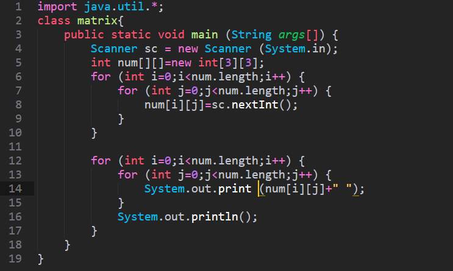

Komal Shaheen 2020
Welcome to my Portfolio
CSY1018-Web Development
CSY1026-Datebase
CSY1017 – Computer Communications
CSY1014 – Computer Systems
CSY1019 – Software Engineering

CSY1020 – Problem Solving & Programming
Home
Portfolio
CV
Site Report
Contact